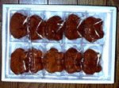
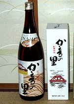

大王様に会うには、上の絵をクリック。ずずっと奥に写真館があるぞ。 |
|
【かえる古新聞】
|
|
【カエル速報】 1.カエルグッズ 2.カエルリンク 3.国家健全化計画 4.謎の髭男 5.とっくりくん 6.街頭で見た蛙 7.カエルショップ 8.奉納カエル絵馬 9.カエル・コスプレ 10.カエルな表紙 |
| 大王様へのメール |
奉賛会推薦菓子
かえる饅頭 この欄に紹介するカエル物品や書籍についての情報を待っています。みんなで、掘り起こそう、かえる土産。かえる産品を奨励しよう！使うほど安く良くなるカエル品 |
|
|
印南製カエル饅頭を肴にぐっと一杯
|
 |
|
 |
ひろあき同志記者の直筆署名
@) @) HIROAKI YAMAMOTO <*><*> ( _ ) OSAKA / ABENO < __; >
３菓子店が饅頭を製造
【福岡発=げこげこ大王７世】スーパー「千寿堂」�ｴ0738-42-1555に電話したところ、印南町内３つの菓子店が、かえる饅頭を製造。ドラ焼き形式と饅頭形式と２種類あるらしい。「千寿堂」では、２種類を扱っているが、入荷はごくまれで、『気が向いたときに、少しずつある』という。菓子店のおやじが『きょーは雨が降っているし、ひとつカエル饅頭作ってみるかな』と、決意したときに納品するらしい。事前に電話予約を入れていたほうがよいという。あっさりと出かけて入手してしまった、ひろあき同志は、大変に強運な持ち主であったのである。
元祖かえる新聞がカエカエカエロンと改題？
【福岡発=げこげこ大王７世】先週発見した、元祖かえる新聞を熟読していて、第４号を見ていたら、題名をカエカエカエロンに改題したというニュースが飛び込んできた。現在、元祖かえる新聞の編集長に、ここのカエル新聞の主筆になってくれるようにメールしているが、最終更新日時が今年の１月を最後に、更新されていないので、主筆は現在、ほかの遊びに夢中になっているのであろうか。かえる新聞主筆←まだ引き受けてくれたわけではない←の横顔も発見したので紹介しよう。かえる友の会潜入作戦間近！
【福岡発=かえる娘Ｎ同志】関東地区に実在する、かえる友の会の入会申込書を持ち歩いたまま出張しています。福岡に戻り次第、げこげこ大王様は潜入ルポ書くために、入会手続きしてもらいます。えーっと、申込書によると、入会資格は、カエルコレクション１点以上持つこと。入会すると、かえる友の会便りを送付するほか、カエルに関する情報満載の『かえる通信』を送付してもらえます。入会金１０００円、年会費２０００円だそうです。みんなありがとねーっ
【福岡発=げこげこ大王７世】かえるシール発送に対するお礼のメールとか、かえるグッズ情報の提供をありがとー。大王様も、がんばるからねー。シール発送第二陣の人はもう少し待っていてください。情報には写真がついていると、この新聞にも掲載されるぞ。みんなもカエル記者になってみよう。名刺とかも準備しちゃおうかな(笑)。「かえる神社」の情報を待つ
【こんどー同志発】埼玉の長瀞というところに「かえる神社」があるそうです。埼玉県近郊のカエル同志は、レポートを寄せてくれ。| 写真の説明＝かえる饅頭を肴に、かえるの里を飲めば、人生最高だ。酒があるのだから、カエルワインとか、カエルビールとかも発売したらよい。カエルクッキーとかカエルチョコとか、カエルケーキみたいな洋ものが出てくるのも時間の問題だ。全国の菓子店の経営者は、カエルブーム到来に備えて研究しておこう。 |